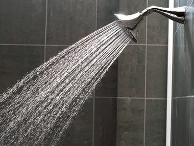

Chemical Waste Disposal
In June 2000, facilities management at the University of Massachusetts-Boston surveyed lab managers at the University regarding chemical waste disposal. One question that they asked the survey participants was, “Which federal agency regulates the disposal of chemical wastes: Occupational Safety and Health Administration, Environmental Protection Agency, Department of Transportation, or National Institutes of Health?” The individual responses for this survey are shown below by showing the first letter corresponding to each participant’s category choice. Note that one participant did not answer this question and is labeled with a “U” for “unanswered.” Enter these data into a CSV file, load into R, and write a brief conclusion regarding the beliefs of lab managers derived from summaries of these data.
O, E, E, O, E, E, E, O, D, O, E, O, E, D, E, O, N, O, E, D,
N, E, D, E, D, O, E, O, E, O, E, E, D, O, E, E, E, E, O, E,
N, O, N, O, E, N, E, O, E, E, E, D, N, E, O, E, N, E, E, N,
E, E, E, N, E, E, N, D, D, E, O, O, E, E, E, N, O, O, O, E,
O, O, E, E, U, O, E, O
Water Usage

Students in a senior level environmental studies class at Rice University conducted a voluntary response survey regarding water usage by their peers. They received returned surveys from a total 130 students. One question on their survey was, “On average, for how many minutes do you let the water run each time you take a shower? 0-5, 6-10, 11-15, or over 15 minutes?” The individual responses for this survey are shown below with letters corresponding to the category choices offered (e.g., “A”=0-5, “B”=6-10, and so on). Enter these data into R and write a brief conclusion about these data.
D, C, B, B, C, C, B, B, C, C, C, B, D, B, C, C, B, C, D,
B, C, C, A, B, C, C, A, C, C, D, A, C, C, B, B, B, B, B,
D, B, D, B, C, B, C, C, D, C, B, B, D, C, B, C, B, B, C,
B, C, B, C, B, B, C, D, B, C, D, C, B, C, D, C, C, B, C,
D, B, B, D, B, C, B, B, C, B, C, D, D, C, D, B, B, C,
A, A, B, C, B, C, D, D, C, B, D, C, C, C, C, A, C, D,
B, B, D, C, B, B, A, B, C, B, D, C, C, B, C, C, B, B
 King et al. (2013) examined the habitat use of Brown Pelicans (Pelecanus occidentalis) in the Northern Gulf of Mexico. In one part of their study, they recorded the GPS location where each pelican was spotted. The bar chart below shows the percentages of those GPS locations in major habitats. Use this information to answer the questions further below. [Note that
King et al. (2013) examined the habitat use of Brown Pelicans (Pelecanus occidentalis) in the Northern Gulf of Mexico. In one part of their study, they recorded the GPS location where each pelican was spotted. The bar chart below shows the percentages of those GPS locations in major habitats. Use this information to answer the questions further below. [Note that